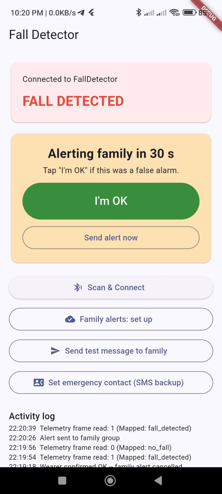
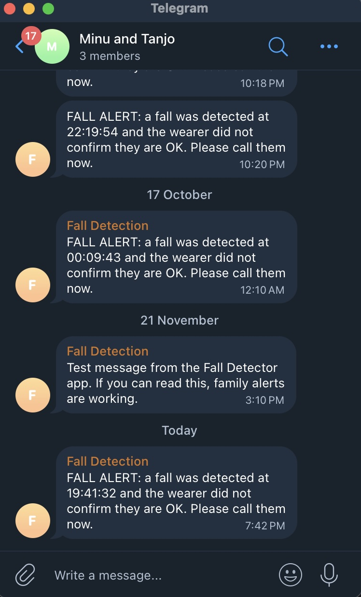
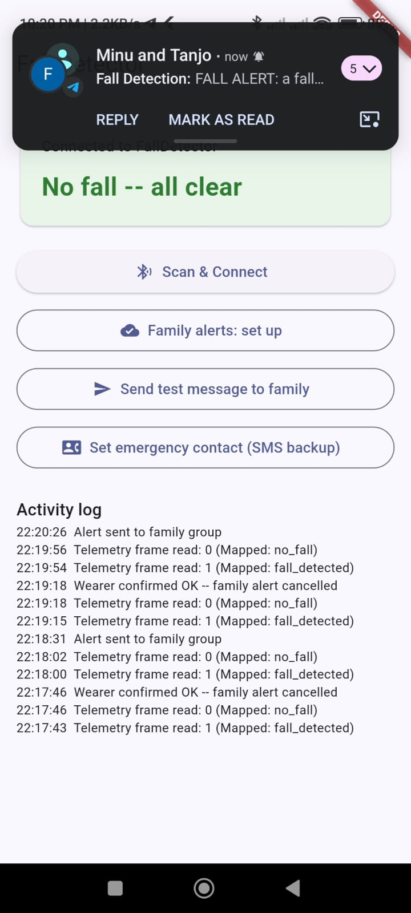

Watch the video
Narrated video: how the system works, the daily-activity test, the simulated fall test and the results.
The problem
Elderly people who live alone can fall and lie unnoticed for hours. A call button needs the person to press it, and cameras are costly and invade privacy.
This system needs no camera. It only reads motion from a sensor worn at the waist, and the raw data stays on the device.
Call button
Only works if the person can press it.
Cameras
Costly, and they invade privacy.
Phone sensors
Only work if the phone is carried.
Source: World Health Organization, Falls fact sheet (2023 estimates) – who.int/news-room/fact-sheets/detail/falls
How it works
1. Sense
ESP32 and MPU6050 read acceleration and rotation 100 times per second.
2. Decide
A TinyML model checks the last 2.5 s every second. A fall is confirmed when the fall score is above 0.6 in 2 windows in a row.
3. Ask
Bluetooth LE alerts the Android app, which shows a 30-second "Are you OK?" countdown.
4. Alert
No answer: a Telegram message goes to the family group. Offline messages are queued and retried every 20 s.
Our real prototype
Two tests: daily activities (expected: no fall detected) and a simulated fall (expected: fall detected and a Telegram alert).
The prototype app

FALL DETECTED and countdown
Telegram group alerts
Activity logResults
Trained on the public SisFall dataset (38 subjects) and tested on 7 subjects never seen in training.
Six-axis model. Test figures were measured on the float32 version; the exported model is int8-quantised.
Poster

Honest limitations and next steps
Limitations
- Validated on a public dataset and bench tests; not yet tested with elderly users in the field.
- In the background the app still sends the Telegram alert, but does not show the countdown pop-up.
- Battery life is not measured and SMS backup is not implemented.
Next steps
- Foreground service so the countdown shows in the background.
- SMS backup.
- Field trial and battery measurement.
Source code and report
Team
Tanjo Akter, Monisha Das, Samira Oasela Antika
Supervisor: Professor Md. Rokan Uddin Faruqui
Department of Computer Science and Engineering, University of Chittagong